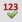
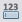
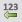
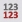
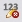
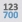

Interactive Tester results
Tests are run and reviewed interactively on a test case by test case basis. Users can compare the results of one test against the results of previous tests to determine whether the test is a success or a failure.
In the Table View, results can be displayed at the summary level (for example, expected results-based key performance indicators for the entire test data set), or at the detail level (for example, expected results for each individual test case in terms of values of specific characteristics).
The actual contents of the Results table will depend on the component being tested and the details of each test case. The layout of the Results table is, however, always the same.
Users can review the results data, case by case, alongside associated input test case data. The contents of the Results table are read only.
The Results table includes the following columns:
- #: Row number defines the position of the characteristic on the table.
- Select: The user can choose to display only those characteristics selected in the check box (using the Show selected characteristics button from the toolbar).
- Type: The characteristic type is displayed as an icon; the type is either string (text), integer , date , decimal or floating point .
- Characteristic: Consists of the characteristic type (as described above) and its long name. This field shows the long name of the characteristic, displayed as a composite name with dots as separators.
- 1, 2, 3, 4,...: Test case(s) results.
Other options include:
Highlight: The Highlight buttons enable users to choose various options to highlight the differences in results between successive test runs.
Expected: Click on the Expected button 
In the Tree View, results are displayed in the Results area. The actual contents of the Results area will depend on the component being tested and the details of each test case. The layout of the Results area can be displayed in the Tree View or Table View. The contents of the Results area are read only.
Display options
 Column display button - Allows users to display the Name, Type, Length, Scale, and/or Value; and choose whether the following should be available for each characteristic: Horizontal Scroll, Pack All Columns and/or Pack Selected Column.
Column display button - Allows users to display the Name, Type, Length, Scale, and/or Value; and choose whether the following should be available for each characteristic: Horizontal Scroll, Pack All Columns and/or Pack Selected Column.

{kind=link}
{kind=link}
{kind=link}
{kind=link}
{kind=link}
{kind=link}
{kind=link}
{kind=link}
{kind=link}
The Interactive Tester is designed to allow users to run tests repeatedly, modifying inputs between each run. The Highlight option helps users to differentiate between the results of successive tests.
To highlight the differences in results between successive test runs
- Run a test to obtain an initial set of results.
- Modify the test inputs, and re-run the test to obtain a second set of results.
- Use the Highlight buttons on the Results table to choose how you wish to display the differences.
- Depending on which highlight button you have selected, the values that have changed between successive runs are highlighted in bold on a grey background.
{kind=link}
The Highlight options are:

{kind=link}

{kind=link}

{kind=link}

{kind=link}

{kind=link}
The following example shows the results when using the Highlight option "Different from previous value". In this case, the test cases were run using one set of input values, then the input values were modified slightly and the test cases were run again. The modified input values are highlighted, as are the affected results.
Hovering the mouse over a cell provides details about the cell contents, including the cell's previous and current values.
{kind=link}